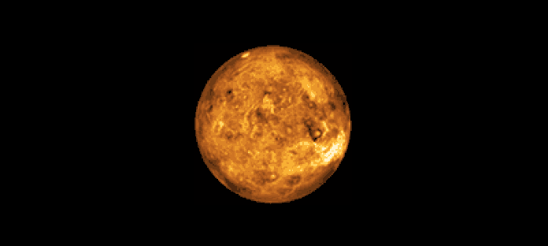
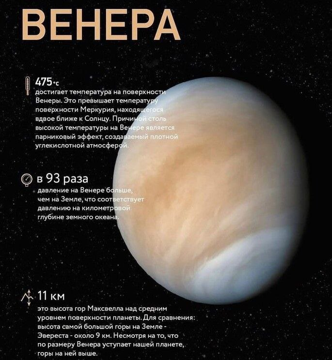
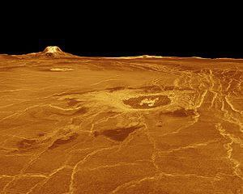
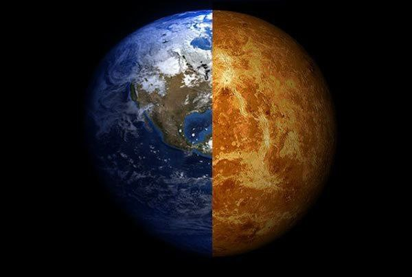

Венера — вторая планета от Солнца и шестая в Солнечной системе по размеру. Она входит в семейство планет земной группы, наряду с Меркурием, Землёй и Марсом. Планета названа в честь древнеримской богини любви, Венеры. По некоторым характеристикам, таким как масса и размеры, Венера считается «сестрой» Земли. Венерианский год длится 2247 земных суток. Планета имеет самый продолжительный период вращения вокруг своей оси — около 243 суток (243 0212 ± 6). Это больше, чем у любой другой планеты в Солнечной системе. При этом Венера вращается в направлении, противоположном направлению вращения большинства планет.
VENERA

Давайте посмотрим как выглядить Венера

Венера и Земля часто сравниваются из-за их схожих размеров и структуры, но есть и значительные различия. Вот некоторые из них:
Размер и масса: Венера немного меньше Земли с диаметром около 12,104 км по сравнению с земным диаметром 12,742 км. Масса Венеры составляет около 81.5% от массы Земли.
Атмосфера: Атмосфера Венеры состоит в основном из углекислого газа (CO2) с очень высоким атмосферным давлением, в то время как земная атмосфера содержит больше азота (N2) и кислорода (O2) с гораздо более низким давлением.
Температура: Средняя поверхностная температура на Венере достигает примерно 465°C, что делает её самой горячей планетой в Солнечной системе, в то время как средняя температура на Земле составляет около 14°C.
Вращение: Венера вращается вокруг своей оси в обратном направлении и очень медленно, в то время как Земля вращается быстрее и в прямом направлении.
Вода: На Земле есть обширные водные ресурсы, включая океаны, реки и озера, в то время как на Венере вода отсутствует в жидком состоянии из-за высоких температур.
Жизнь: Земля поддерживает обилие жизни благодаря своей умеренной климатической системе и наличию воды, в то время как на Венере условия считаются слишком экстремальными для поддержания жизни, как мы её знаем.
